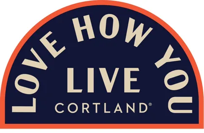
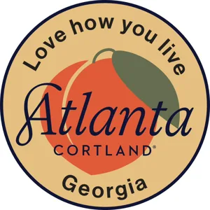
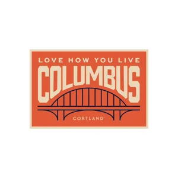

Cortland LegacyThe Achievement Journey
Your Commitment. Your Growth. Your Story.
Cortland Legacy is a proposed achievement and recognition experience designed to celebrate associates throughout their careers. From annual service milestones to exceptional accomplishments, associates can build a collection of digital badges and exclusive physical patches that reflect their individual journey.
Concept in Development — For Leadership Review
Grow
Build knowledge, develop skills, and achieve personal and professional goals.
Achieve
Earn recognition for meaningful accomplishments and demonstrated impact.
Belong
Celebrate commitment, milestones, and the experiences that make each associate’s Cortland journey unique.
Digital badges, earned patches, and two jackets
Each recognition type has a different job. Digital badges make everyday growth visible. Annual Cortlandian and distinguished patches are physical and earned. Two jackets mark five and ten years of commitment.
Two jackets. One connected journey.
Wearable achievement collections for five and ten years of service. Both are company gifts: never sold, never redeemed with points, and never billed to associates. Every rendering here is a conceptual mockup.
Patch placement studio
Choose patches an associate might have earned and see how they could sit on either jacket. This is an illustration, not a merchandise order.
Every Year Builds Your Story.
A ten-year Cortland Legacy Journey. Switch between four fictional associates, then select any year or either jacket milestone to see what it holds.
Chapter one Years 1–5 · The Cortlandian Denim
Chapter two Years 6–10 · The Cortland Legacy Letterman
Four recognition levels
Each level has its own shape, border, and evidence standard, so the difference reads clearly without relying on color. Rarity comes from what an achievement requires, never from rankings or completion percentages.
Standards should be achievable in every role, department, and career path.
No level is assigned by ranking associates against each other.
Higher levels ask for more evidence and more time, not more luck.
Six collections to explore
One design system for screen and thread: bold geometric shapes, five or fewer colors, and details sized for embroidery. Select any badge for its proposed criteria and previews.



Built on art Cortland already usesExisting Love How You Live patch and market badges, shown for style reference.
These are exploratory badge concepts. Their names, qualification standards, and patch eligibility have not been approved.
A fair start for those already here
Many associates have passed five or ten years before launch. A proposed transitional review uses the documentation that exists and doesn’t assume every historical goal record is available.
Associates with 5–9 years
Eligible for the five-year denim jacket qualification review.
Associates with 10+ years
Eligible for review of both the denim and the letterman milestones, with digital milestone recognition once verified.
Transitional review could draw on
- Service records in UKG
- Annual reviews that exist
- Manager attestation where records are incomplete
- Verified contributions and recognition history
Policy question: what do associates with 10+ years receive?
Leadership must choose. No option is selected on this page. Costs update from the budget calculator.
What the two-jacket model could cost
Adjust the planning inputs to compare distribution timelines and existing-tenure options. Figures are hypothetical, not supplier quotes or headcount data. Nothing here creates a purchase, expense code, or bill.
Estimated annual distribution, five-year planning view
Compare backlog distribution timelines
Compare existing-tenure options
Earned obligation is what associates have qualified for. Scheduled in plan is what would be purchased within the planning view. Deferred is earned but not yet scheduled. Associates with 10+ years are counted only in that group, never also in the 5–9 group.
Proposed funding structure
Requires Finance and leadership approval. Jackets are gifts from Cortland; associates are never personally billed.
| Recognition item | Proposed funding |
|---|
My Legacy Journey, inside My Goals
A proposed associate view beside My Development Goals, showing both jacket milestones as one connected career journey, alongside goals, learning, and recognition.
Building the Cortland Legacy Program
Decisions to shape together. Each stays marked Open or Proposed until formally approved. Nothing here is an approved policy, eligibility rule, design, or budget.
What every decision should protect
Whatever the final rules look like, these principles keep the program meaningful and fair.
The central message
Every year builds your story. Every achievement adds to your legacy.
The denim jacket celebrates commitment and growth. The letterman honors a decade of consistency and contribution. Together, they form a journey associates keep building throughout their careers.
CONFIG object. Design tokens live at the top of its styles.